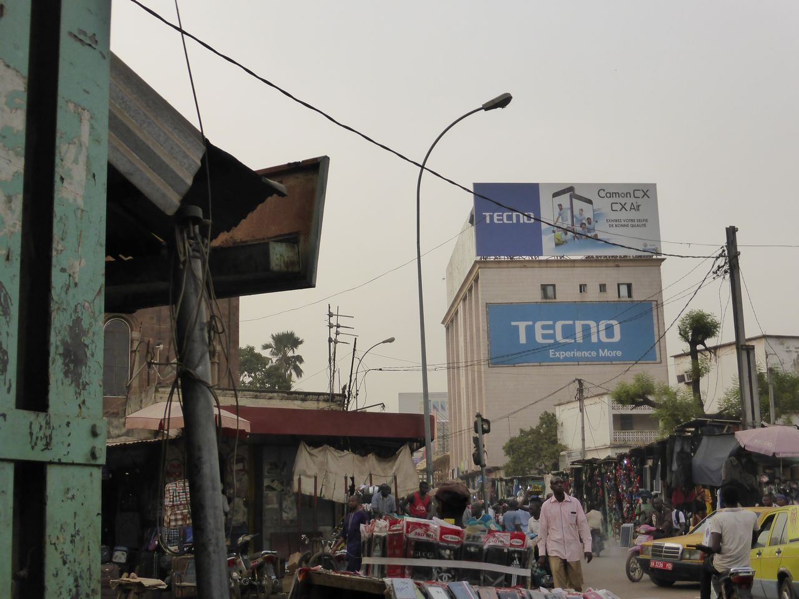
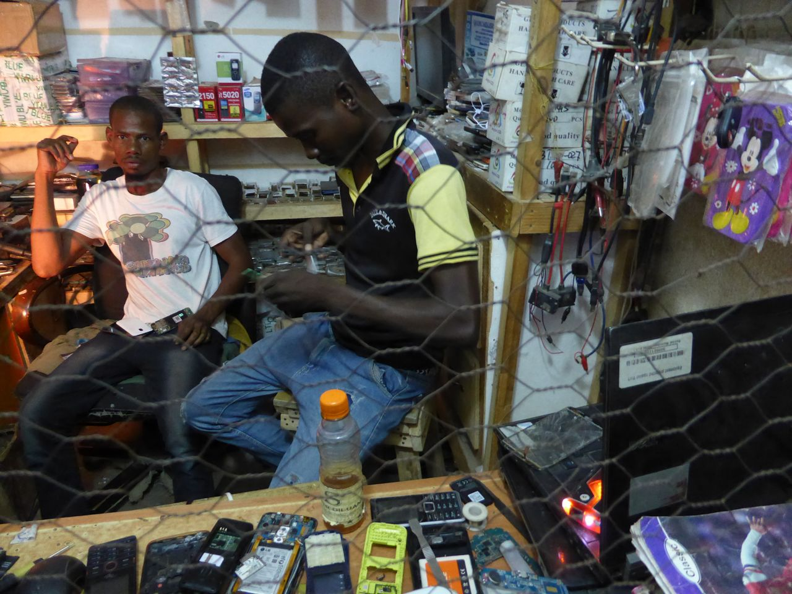
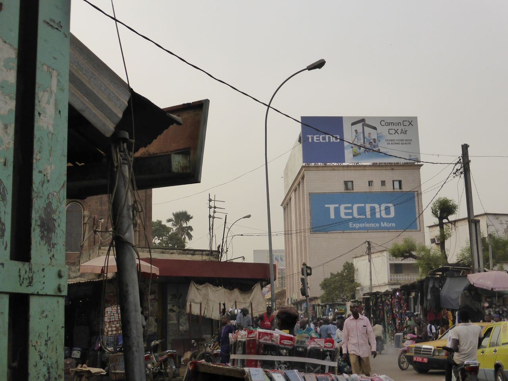
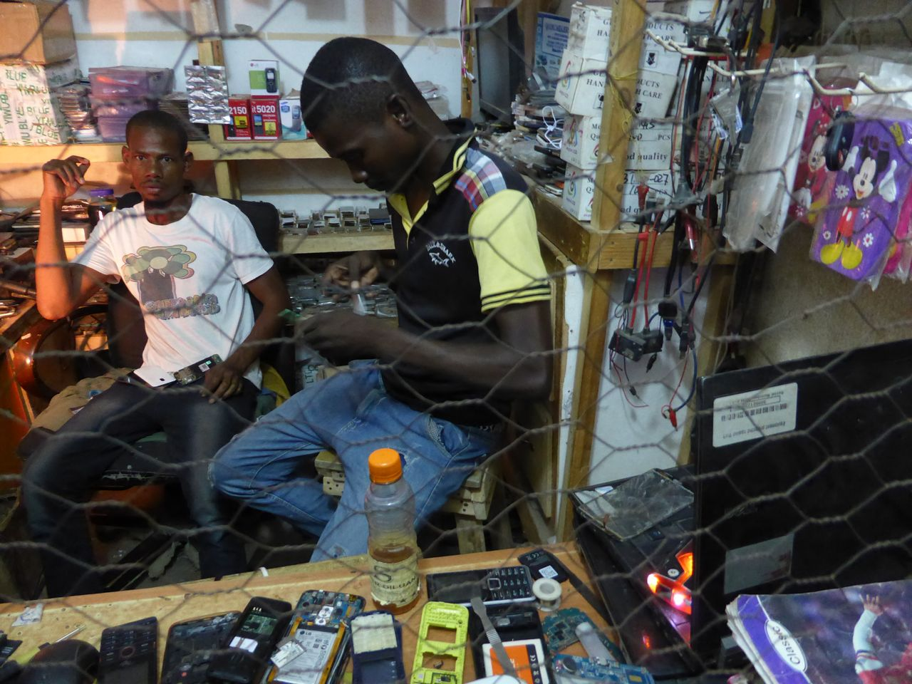
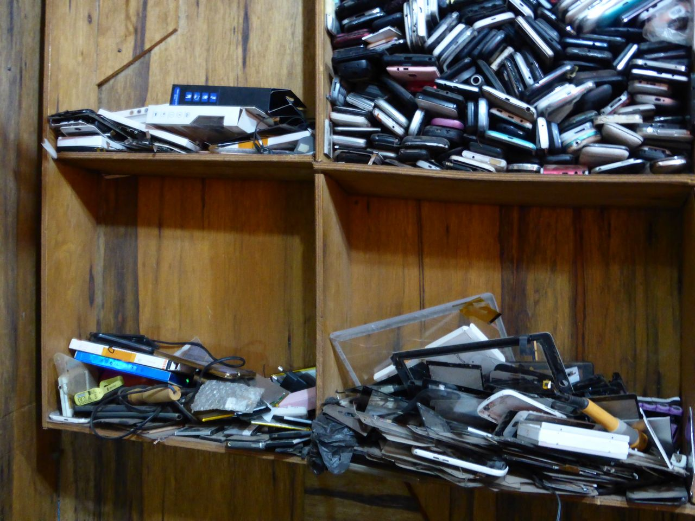
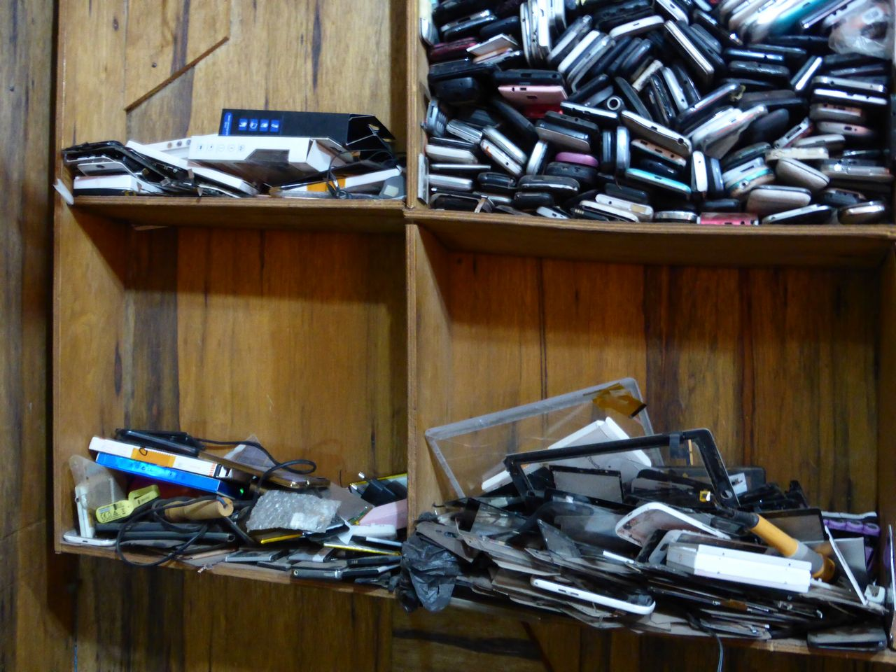

smartphone
object biography
Times of Waste

Reuse
The international used-phone market is an emerging market. In countries in the ‘Global North’, it addresses people who do not always want to own the latest or who have to live on a small budget. For many people in countries of the ‘Global South’, it has recently become one of the only financially viable ways to afford a mobile phone. In recent years, cheap Chinese phones and Chinese mid-range brands such as Tecno, Xiaomi and Redmi have begun to capture the African market. Even high-priced brands like Samsung or Huawei are in demand. This does not, however, detract from the second-hand market.
The function of the second-hand consumer market is ambivalent: on the one hand, it benefits from the growth ideology, because only a fast turnover guarantees device replenishment, on the other hand, it offers a pragmatic way to extend the short-lived life of a smartphone and thus reduce its throughput rate. Many devices that can no longer be sold in Switzerland, pass through middlemen, relatives or tourists in countries with low purchasing power, especially to southern and eastern Europe, as well as Asia and Africa. Basically, the poorer the quality of the device, the further from Switzerland it is sold or given away. Many defective devices go to China, where they are repaired and resold to poorer regions of Asia or Africa. However, this could change soon as China is about to revise the import conditions for scrap.
Within the frame of a ‘good cause’, official mobile phone service points and other second-hand dealers in Switzerland are helping to equip people from disadvantaged regions with mobile phones and to reduce the e-waste in the North or move it to the South. Often, a large portion of the sales proceeds benefits relief organizations. For example, the Lausanne-based trading company Helvetrade works with Terre des Hommes. However, what exactly happens with the old smartphones in the international used-phone market eludes both concern and control. Hardly anyone can say exactly how long these devices are still in use before they become toxic e-waste. How to deal with the dilemma that the ‘good cause’ at the same time leads to the accumulation of e-waste, for which there are still hardly sustainable solutions in these countries, is a crucial question. The issue is not new: for example, second-hand car trading has led to countries like Senegal imposing an import ban. Thus, the problem can only be properly addressed by looking for a solution to e-waste. Everything turns into junk, concludes Anthony Bankole, aka ‘Tony Schrott’, one of the e-waste traders in Lagos. That’s why this business is so promising for him: “I already know that my two super, new smartphones are going to become junk.”
“The used mobile phone market can be compared with the second-hand car market: once the first market became saturated, the second-hand trade began. This situation has now occurred in Western countries. In Switzerland it is only just beginning: here only 1-2% of cell phones return into use, compared with other countries where the ratio can be 20-40%.” RS Switzerland
Ecology or changing market?
Even companies such as Samsung or Apple are now entering the used cell phone market. They do this not for environmental reasons but to participate in the developing market.
Reparability
With the smartphone, there are hardly any alternatives. It is a sealed minicomputer whose reparability and recyclability is difficult.
Nevertheless, about 15 components in a smartphone can be repaired. The repair options in Switzerland have risen rapidly in the last two to three years. It is no longer just small, alternative repair shops or online second-hand dealers like verkaufen.ch that perform this service. In the meantime, it has become possible to have defective devices mended on the premises of the mobile giant Swisscom, for example. This is remarkable as sustainability contradicts its core business – increasing sales of new equipment. Their particular achievement, in contrast to the small repair shops, is that they are licensed by companies such as Apple. Up to now, warranty claims would expire if people had their device repaired.

The best intervention is the Fairphone or the SHIFTphone, since their components are designed with interchangeability in mind. However, interchangeability and reparability are promises not easily held due to the dependence on production components. For example, the Fairphone 1 could no longer be retrofitted after about 3 years due to spare parts that were no longer available and incompatible software.
The lifespan of 5-6 years for a smartphone, as opposed to the predicted and targeted 12-24 month initial use, is not bad, especially considering that the small size of the device leaves relatively little electronic waste.
Although the smartphone is designed as a short-use, throw- away product, it can be used individually quite ‘a little bit’ differently. Therein, lie opportunities that in the end make the smartphone interesting for the increasingly important, collectively lived DIY cultures of repairing. In such DIY cultures, the common activities of patching are understood as forms of a ‘post-growth society’ that relativize life in abundance – in a playful and non-abstemious way.
Sources: From discussions with Helvetrade SA Lausanne (18.8.2016); Jérôme Grandgirard / Romina Hofer, RS Switzerland Fribourg (8.9.2016), Peter Oertlin, verkaufen.ch, Cham (11.8.2016); Swisscom Shop, Zurich (July 2017); Daniel Kötter, Berlin (31.1.2018); David Signer, Dakar (August 2017); Die Zeit online: https://www.zeit.de/2017/49/fairphone-smartphone-produktion-rohstoffe-probleme/komplettansicht.
How does the second-hand market work in Switzerland?
In Switzerland, companies like verkaufen.ch, RS Switzerland, Helvetrade SA or Revendo operate the second-hand consumer market.

Cham
The company verkaufen.ch has been active in Cham near Zug since the end of 2012. Peter Oertlin, who previously built Ricardo Switzerland, founded it together with a colleague. It has about 13 employees and a growth of 60-100% – the business is doing well. The Times of Waste team met with Peter Oertlin in the summer of 2016 for an interview.
Purchase
In Switzerland verkaufen.ch works among others with Sunrise, the Post, Manor and Fnac. In addition, they buy devices both at home and abroad. This can be from 200 to 2,000 items, depending on the situation, for example, if a commodity chain has over-speculated (too much stock) and they cannot get rid of their devices. In Switzerland, this sell-off situation happens less frequently, because the market is more saturated and therefore can be assessed more accurately. Switzerland is more of a ‘buying country’ for verkaufen.ch.
Repair
vekaufen.ch wanted to offer a convenience product and needed technicians to check the devices. This has made it possible to develop the site reparieren.ch, although repair is not the main component of the business. The most common cause for about 80-90% of the repairs is the sensitive glass. According to Mr. Oertlin, the repair boom only came about through the many glass repairs; previously no such repairs were made.
Sales
In Switzerland, verkaufen.ch sells devices online via its own website as well as to intermediaries who they regularly collaborate with. Abroad they have two main sales areas: The Balkans and Africa. The Balkans are interesting because they are close, but they do not have the same level of economic development as Switzerland. In Africa, verkaufen.ch work in countries such as Algeria, Morocco, South Africa and Uganda. Since the volume is low – fewer than 3,000 devices per month – the export operates mostly through middlemen, who deal with the devices directly. Of the middlemen with whom they work, one person often lives in Switzerland, the other in the respective country. They not only buy smartphones, but electronic devices in general. For example, verkaufen.ch has someone on the board who sells household solar systems to Africa. These small panels provide household electricity and so can also charge a smartphone. Mobile telephony is important in Africa, as infrastructures for a fixed line system or Internet, in contrast to the mobile antennas are not sufficiently developed. This is why so much works on mobile telephony. For example, in over ten countries, bank transfers are made via SMS, as there is no e-banking. So there are other payment systems – a market in which Apple Pay now apparently wants to get started. Central to this is the so-called ‘success model’ from Kenya, where the British wireless and radio business Vodafone and its subsidiary company Safaricom launched the first mobile payment system M-Pesa in the middle of 2000. Today, every second financial transaction made via smartphone worldwide takes place in Kenya.
"The condition of the equipment coincides with the quality of life and purchasing power that people have. Prestige brands are important in emerging markets and in Africa: Apple (which, however, only a few can afford), Samsung. Sony is not in the market. As a status symbol, the smartphone has replaced the watch in certain countries." verkaufen.ch
Sources: From a conversation with Peter Oertlin, verkaufen.ch, Cham (11.8.2016). Fabian Urech. Today, every second mobile money transaction worldwide takes place in Kenya. In: NZZ, 16.12.2018.
Fribourg
RS Switzerland is the Swiss branch of the Recommerce Group, a European supplier of used equipment, with several European locations and headquarters established since 2009 in France. RS Switzerland has been working in Fribourg since the end of 2014, where Country Manager Switzerland is Jérôme Grandgirard. The business is going well; the market has great potential. The international Italian management and strategy consulting group Deloitte reports that the worldwide second-hand market will account for 13% in 2020, according to RS Switzerland's online shop website launched in December 2017. The Times of Waste team met with Jérôme Grandgirard and Romina Hofer for an interview in the summer of 2016.
Purchase
The partners of RS Switzerland are Swisscom, which also works with M-Budget, as well as Orange, SFR, Samsung, Blackberry and Allianz. Insurance companies are also interesting as future partners, because there is an increasing need to replace an old cell phone with a used device rather than a new one. Premiums become cheaper for the customers, and the insurance industry can present itself as ecologically aware. The Recommerce Group (not only RS Switzerland) buys 50,000 devices a month; in Switzerland, the figure is far lower, since here the devices are stockpiled rather than sold. In countries like France or Spain, the market has been lucrative for 5 years. In Switzerland, it is only just kicking off. According to J. Grandgirard, 60% of Central European mobile users always want to have the latest device. These are the people who are interesting to the Recommerce Group because they are so-called ‘delivery customers’ – that is, providers.
RS Switzerland buys equipment returned in-store or elsewhere and has it tested by Lab-Partner réalise who operate in Geneva. There, the devices are divided into the categories: Premium, Standard, devices for export and broken devices.
Repair
RS Switzerland does not carry out any repairs in Switzerland. It is too expensive, and the volume too small. The repairable devices are collected, transported to France and repaired there. Recommerce themselves offer a one year warranty for these repairs. According to the managing director, Mr. Grandgirard, this was important in order for the second-hand market to be taken seriously and to make clear that even a used cell phone is a good product. In addition, the concessions enforced by Apple would become obsolete: Apple prohibits the repair by non-licensed companies, or in such cases retract the warranty.
Sales
60% of the returned devices are Premium quality. RS Switzerland offers these devices to private customers via the M-Budget website. In December 2017, their own website was launched. In fact, they have too few devices on offer in Switzerland, that is there are more customers than available goods; there is the same problem in France.
25% of the devices are standard. Currently, these devices are sold in Switzerland by about 20 dealers, mainly small repair shops that also take category 3 – devices for export. The rest goes to France to the parent business. There, various dealers buy used machines and export them to numerous countries. It is done like this because the volume in Switzerland is too small.
15% of the devices are of poor quality: these go mainly to France to the parent company, and from there to Spain, Portugal, Germany, the UK and various countries in Africa, mostly to Asia, especially to Hong Kong. The Hong Kong dealers are interesting for the Recommerce Group because they take very large volumes. In Hong Kong, there is also a stock exchange that announces the prices for the various smartphones on a daily basis, both for used and new phones.
Sources: From a conversation with Jérôme Grandgirard / Romina Hofer, RS Switzerland, Fribourg (8.9.2016).
Lausanne
Helvetrade SA is a trading company in Lausanne active in the field of mobile telephony. An important business area is the repair, reconditioning and sale of second-hand equipment. One of their goals is to equip disadvantaged regions with mobile phones and counter the huge run through of equipment. A substantial portion of the proceeds they generate goes to Terre des Hommes. The Times of Waste team held a telephone conversation with Cyril Nguyen, Managing Director, in August 2016.
Sales
Helvetrade SA is a small business that exports about 500-600 mobile devices per month. They also work with middlemen who come from the countries they ship the equipment to. About 7-8 years ago, they delivered mainly to Pakistan and Hong Kong, from where the equipment went to the low-income regions of China. They no longer supply this market. Now, they export to West Africa, especially to Mauritania, Mali, Burkina Faso and Togo. Trade is organized through a small network of African people living in Switzerland or those who have relatives in Switzerland. They transport the devices to local commodity markets, where amongst other devices even smartphones are sold.
Source: From a telephone conversation with Cyril Nguyen, Helvetrade SA, Lausanne (18.8.2016).
The second-hand mobile market in West Africa
Many paths of used mobile phones lead to West Africa. One of the main axes runs from Central Europe via South-eastern Europe or directly to West Africa. Another comes from China –especially from Hong Kong or Guangzhou, where broken devices are repaired. African traders buy devices in these places and transport them – often via Dubai – to West Africa. In many cities, there are entire districts dedicated to electronic goods trading. There used or broken mobile phones are taken apart, repaired and resold. Many young African men have gained a great deal of expertise as ‘smartphone doctors’ through their sophisticated repair work on such difficult or ‘impossible’ devices as smartphones.
In Africa, Chinese brands in the lower and middle price segment have swamped the market. Even more expensive brands like Huawei are also to be found. Companies such as Tecno Mobile, for example, fully relied on the African market in 2008, and since 2017 also on Southeast Asia, in countries such as India, Bangladesh or Pakistan. In 2016, the Chinese company InnJoo launched its smartphone in Lagos, and other companies followed suit. In 2012, Tecno Mobile produced the first smartphone “Made in Ethiopia”. Cheap brands allow many people to afford a new device. However, no warranty is offered with such phones. As both the films by Daniel Kötter from Lagos and the texts by Mohomodou Houssouba from Bamako, Gao and Ouagadougou show, newly purchased cheap phones (‘Chinese Phones’) cannot be exchanged if they have manufacturing defects. Such devices also end up in the electronics quarters of these cities, where they are repaired alongside the many used, scrap devices.
According to David Signer, Africa correspondent for the Neue Zürcher Zeitung, who lives in Dakar, there is much to be said in terms of information technology in the current IT situation in Africa. There are hacker scenes in Nigeria, and especially Kenya is technically advanced. But ultimately, the Chinese have dominated the smartphone and IT field. Many Africans are creative users, but powerful IT and engineering skills have yet to be built and systematized. There has been a lack of technical training opportunities that could provide state-of-the-art knowledge. Already in the second-hand car market Africa has developed great skills in repairing. However, it seems now that the computerization of cars and the monopolization of spare parts could well make this competence superfluous.
Sources: From discussions with Helvetrade SA, Lausanne (18.8.2016); Jérôme Grandgirard / Romina Hofer, RS Switzerland, Fribourg (8.9.2016); Peter Oertlin, verkaufen.ch, Cham (11.8.2016); Daniel Kötter, Berlin (31.1.2018); David Signer, Dakar (August 2017).
Ouagadougou, Gao, Bamako
Mohomodou Houssouba
Created from a collaboration with the author and literary scholar Mohomodou Houssouba, whose research work in West Africa also deals with mobile phone applications for the Mali national language Songhay; he explored the second-hand market in Bamako and Gao (Mali) and Ouagadougou (Burkina Faso) for Times of Waste.
Contributions from observations on the ground in West Africa
Author: Mohomodou Houssouba
Location: Mali – Bamako, Gao
Topics: waste generally/repair, reuse, buying-selling/ energy supply, battery as key component
I arrived in Bamako in the afternoon of September 11, 2017. I took an early flight out of Basel, then spent a short layover in Paris. I flew out of Charles De Gaulle Airport at 10:00 am. We were supposed to land at 13:45, but our flight would be delayed by more than a half hour. Then, getting out of the airport hadn’t been straightforward either...
Continue readingSmartphone doctors in the back streets of Quartier Koulouba in Ouagadougou/Burkina Faso
Author: By Mohomodou Houssouba
Location: Burkina Faso – Ouagadougou
Topics: repair, buying-selling
Nowadays, the simple mention of the name Koulouba makes one think systematically of the imposing buildings housing the presidency of Burkina Faso, the hotel Indépendance, some banks and foreign consulates, for example. This is an oversimplified image of a far more complex reality at both human and physical levels...
Continue readingIn the waiting room of the smartphone doctor.
Chez Ibrahim Adjamé, Washington Market, Gao
Author: Mohomodou Houssouba
Location: Mali – Gao
Topics: repair
Right after my arrival in Gao, I inquired about telephone repair shops in town and found out that my research assistant knew places of different levels of skill. Most are located in the two markets downtown. So I followed him the next day. Gao counts two central markets where most trading still gets done…
Continue reading
 



 



Various repaired and used goods offers worldwide (Switzerland, India, Mali, Burkina Faso, Nigeria, China)
Guangzhou
The Chinese port city of Guangzhou is one of the most important hubs for the international trade in second-hand mobile phones. Many Africans buy in Dashatou market, the largest second-hand market in Guangzhou.
Dashatou market, Guangzhou, China: International Trade in Second Hand Equipment (Still from Video)
The material comes from the four-part documentary Chinafrika.mobile by Daniel Kötter, who worked on the same smartphone aspects as the team of Times of Waste in the context of the art and exhibition project Chinafrika.under construction: raw material extraction, production, reuse, recycling. The footage was created locally in Kolwezi, Shenzhen, Guangzhou and Lagos in collaboration with local protagonists.
Camera / interview: Min Mo, Ten Jiang, Tang Jiangdong, Chibuzo Goodluck, Brown
Production: Allyn Gaestel, Boping Zhang
Editing, camera: Daniel Kötter
Lagos
Ikeja Computer Village, Lagos / Nigeria: Mobile Phone Repair and Sale (7:57)
The Ikeja Computer Village district in Lagos is dedicated to the sale and repair of mobile phones. In addition to used phones from the UK, cheap brands from China, so-called ‘Chinese mobile phones’ are very popular, which are mended due to lack of warranty claims and spare parts being available on site. These devices are mainly bought by the middle and lower classes, as brands like Samsung, iPhone, HTC or Huawei are not affordable for all. But these, too, can be found in Computer Village. The fact that the spread of mobile telephony has undergone a major change is enthusiastically commented on by a user: "The mobile phone has greatly improved our lives. My entire Bible, for example, has space on my phone."
The material comes from the four-part documentary Chinafrika.mobile by Daniel Kötter, who worked on the same smartphone aspects as the team of Times of Waste in the context of the art and exhibition project Chinafrika.under construction: raw material extraction, production, reuse, recycling. The footage was created locally in Kolwezi, Shenzhen, Guangzhou and Lagos in collaboration with local protagonists.
Camera / Interview: Anthony Bankole, Deola Adekunle, Adeniyi Ojikutu
Production: Bukola Adebayo
Editing, camera: Daniel Kötter